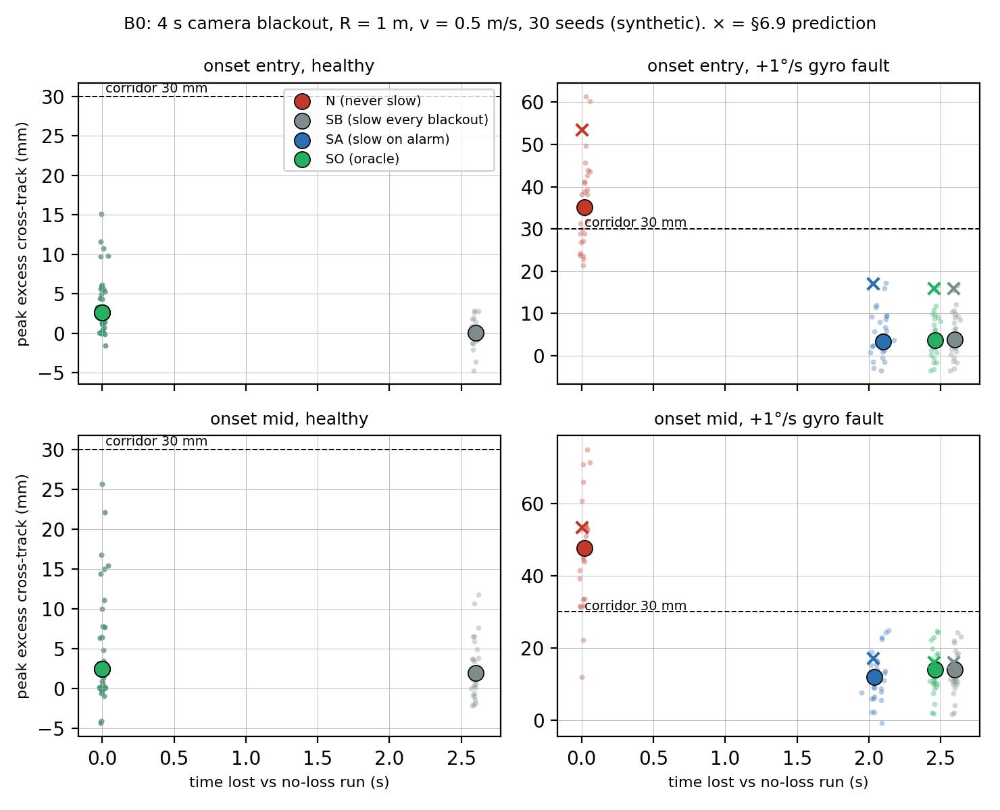
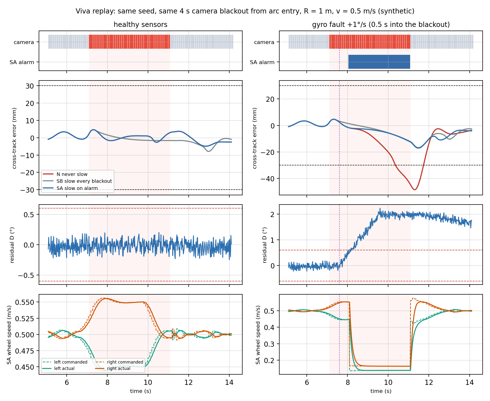
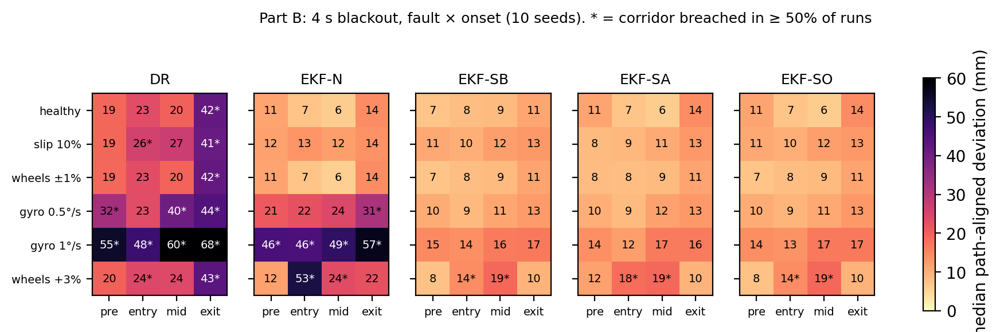
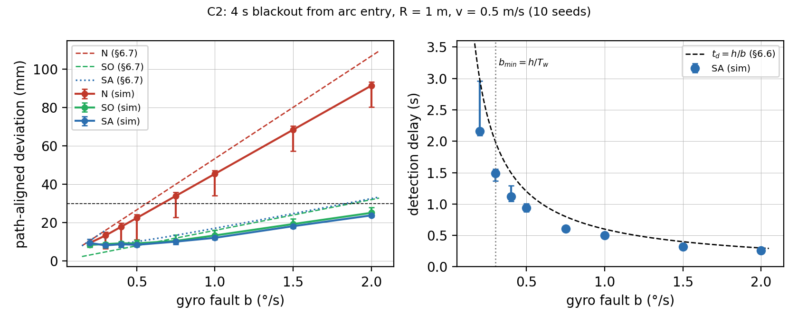
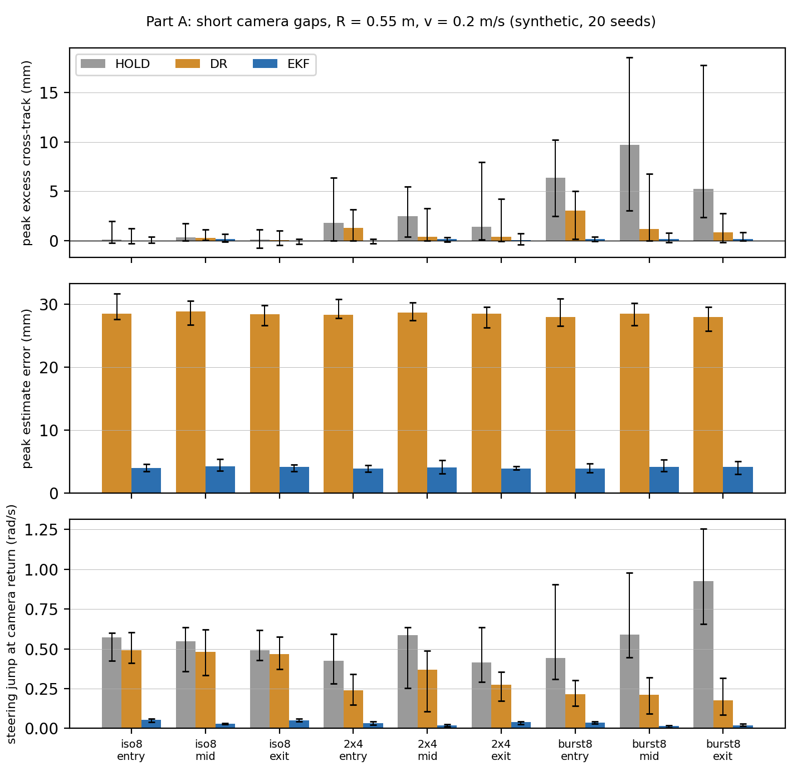
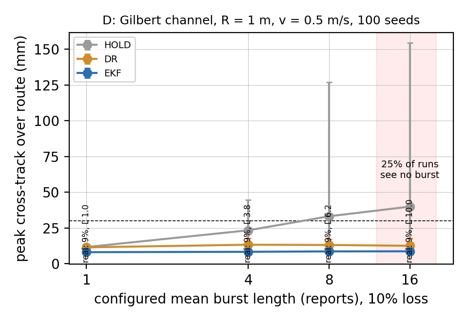

A warehouse robot loses its overhead-camera position fix behind a rack, right at a turn. It keeps driving on wheel encoders and a gyro inside a Kalman filter. If a sensor fails during the blackout, nobody can see it, except the robot itself: it compares the gyro's turn with the wheels' turn and slows down only when they disagree.
One simulated robot, four speed policies, the same seed and noise. Only the decision to slow down differs.
An overhead camera reports position 10× per second; an EKF fuses it with wheel encoders and a gyro at 50 Hz.
A rack hides the robot for 0.5–4 s. The estimate now drifts with whatever error the onboard sensors carry.
Both measure turning. Over a 2 s window their headings must agree within 0.6°; a fault breaks the agreement.
On disagreement the robot drops to 0.15 m/s until the camera returns. Healthy blackouts cost nothing.
About 11,000 simulated runs, pre-registered hypotheses, paired seeds. All provisional until the independent re-implementation (V9) passes.






| Part | Question | Runs | Answer (provisional) |
|---|---|---|---|
| V | Is the simulator correct? | ~150 / pass | All checks pass; timestep 0.001 mm; drift formula within 4% |
| A | Short gaps: hold vs dead reckoning vs EKF | 1,080 | DR ≈ EKF in tracking; EKF far smoother |
| CAL | Freeze the monitor threshold | 960 | Monitor v1 failed (kill criterion), v2: 0 false alarms |
| B0 | Main test: selective vs blanket slowdown | 960 | All four primary hypotheses supported |
| B · C · D · S | Faults × onsets, scaling, burstiness, sensitivity | 8,560 | Holds everywhere; wheel-size error needs calibration, not slowing |
| V8 | Does it run on a microcontroller? | 2 traces | ESP32 (Wokwi) parity PASS |